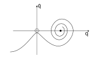

Robust Control of Contact-Rich Robots via Neural Bayesian Inference
Doctoral Dissertation Defense
Candidate:
Nardos Ashenafiüéì
Electrical and Computer Engineering Department
Boise State University, Boise, Idaho, USA
Supervisory Committee:
Aykut Satici, Ph.D.
John Chiasson, Ph.D.
Kurtis Cantley, Ph.D.
Hao Chen, Ph.D.
Arash Komaee, Ph.D.
Publications and Contributions
Published
- CCTA 2021: Cooperative Manipulation
- ACC 2022: Bayesian NeuralPbc
- L-CSS 2022: Bayesian NeuralPbc
- CDC 2022
- Arxiv 2022: Control Design via Bayesian Inference: Theoretical Justification of Robustness
Upcoming Submissions
- Control of Hybrid Dynamical Systems via Deep-net Mixture of Experts
- Data Driven Passivity-Based Control of the Rimless Wheel on Uneven Terrain
Appendix
Contact Modeling
- Objective: accurately model contacts, impacts and Coulomb friction.
- E.g. Model of bouncing ball
- Complementarity Condition
Moreau’s Time-Stepping
- Check if at
- Solve complementarity
Complementarity condition
- For non-convex optimization, use Lemke’s algorithm
Complementarity Formulation
- For potential contacts with gaps , the following holds.
Linear Complementarity Problem (LCP)
Objective: pose the complementarity formulation as quadratic function over the contact forces
Define
Corresponding complementarity is defined
These definitions help express as affine functions of
LCP
- We substitute the affine functions into the complementarity formulation
- The LCP can be posed as a feasibility problem and solved for
- In the presence of friction, the LCP is a non-convex optimization problem
- We use pivotting (basis-exchange) technique called Lemke’s algorithm to solve the LCP
Generalization of the log likelihood
- The experts can take many forms. The likelihood can be generalized as
- For gradient-based techniques, we can extract the relevant parts and simplify the likelihood
Likelihood
Performance Objective
- Minimum Trajectory Loss (MTL):
- Accumulated loss may not reflect desired behavior. E.g. Simple pendulum
- Simple pendulum needs to pump slowly, which would accumulate large cost

- MTL encourages trajectories to eventually lead to a minimum cost
Stable Switching
- Given two unstable closed-loop systems
find stable switching system that converges to
- Maximum number of state partitions set to 4
- The gating network is a fully-connected neural net with 4 outputs
- There are 4 experts with parameters
- Objective: learn that minimize the accumulated loss
Training progress
Passive System Example

Kirchoff’s law
Let , integrate to obtain
Uncertainty in Predictions
- The uncertainty associated with each prediction is given by
Uncertainty in predictions
where is the marginalized prediction given by
Training Stochastic Models
Expectation Maximization
Expectation Maximization
Expectation Maximization
- Expectation maximization is prone to overfitting
- Reduces accuracy of predictions
- Reports near-zero prediction uncertainty (overconfident)
- Solution: enforce variance on the posterior
Bias-Variance Trade-Off
- Prior distribution plays the role of a regularization term
Bayesian Inference
- Prior distribution can be
- Informed: allows us to inject prior knowledge
- Uninformed: starts randomly but every so often gets updated by the posterior
Bias-Variance Trade-Off
- Prior distribution plays the role of a regularization term
Bayesian Inference
Regularization via Prior Distribution
Bayesian Inference
- Prior distribution can be
- Informed: allows us to inject prior knowledge
- Uninformed: starts randomly but every so often gets updated by the posterior
Estimating Posterior Distribution
Bayesian Inference
- Variational Inference: approximates the posterior with a pre-selected distribution
- Objective: collect samples from the current posterior and maximize Elbo
Bias-Variance Tradeoff
Bias-Variance Tradeoff
- Finding deterministic solution under noise has low bias and high variance (overfits)
Bayesian Learning
KL-divergence and ELBO
Prediction through marginalization
Training Procedure
- Start from initial parameters
- Sample initial states
- Generate trajectories using current parameters
- Assign a running cost to the trajectories based on performance
- Update parameters to maximize Elbo
NeuralIdaPbc Main Problem
NeuralIdaPbc
- Solve nonlinear PDEs using neural networks and SoS polynomials
- Surrogates of , , are constrained by construction
Pinn
- Solve nonlinear PDEs using neural networks
- Solution surrogates are constrained via penalty term in loss function
Theoretical Justification of Robustness
Optimal Control under Uncertainty
Optimal Control for a Linear System
Performance Index:
Optimal Control under Uncertainty
Parameter uncertainty: .
Deterministic
Probabilistic
System Parameter and Measurement Uncertainties
Model of measurement noise
Performance Index
- Wiener process, measurement error given by
- Left figure: optimal parameter , Right: minimal cost